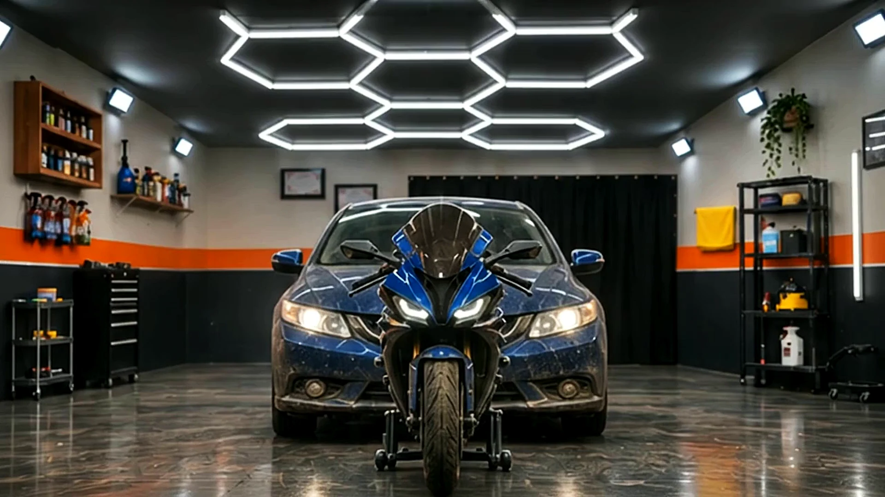
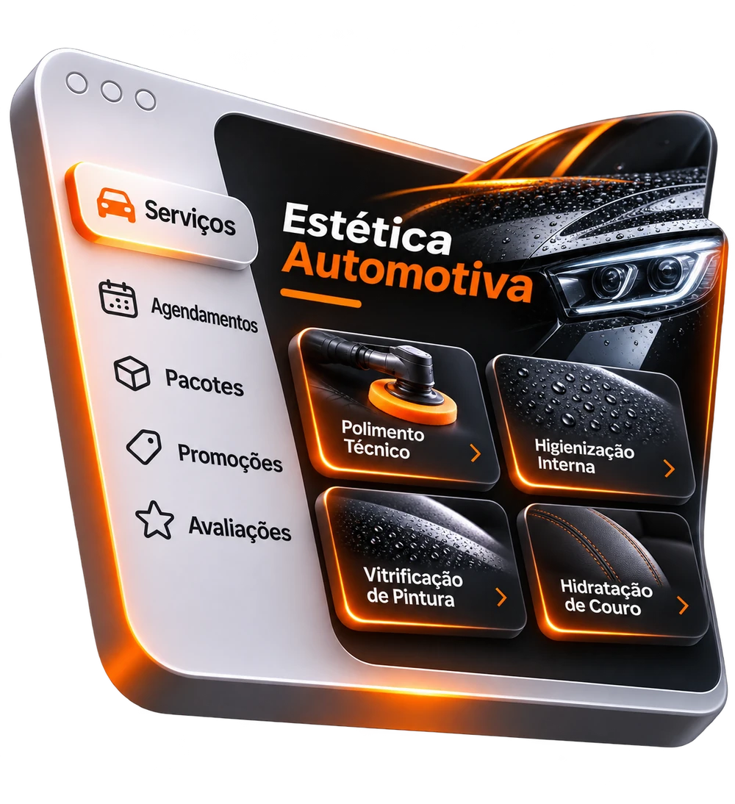
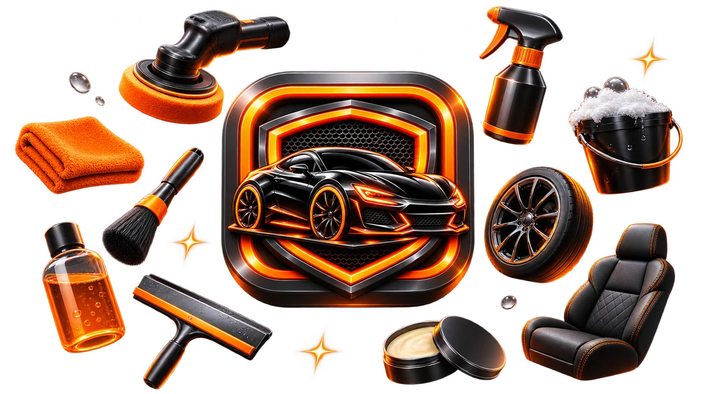

A sujeira sai com água, espuma e mão leve.
O polimento devolve o brilho que o tempo tirou.
A vitrificação protege a pintura.
Para o carro e para a moto, o mesmo cuidado.
Detalhe por detalhe.
O brilho volta.

A sujeira sai com água, espuma e mão leve.
O polimento devolve o brilho que o tempo tirou.
A vitrificação protege a pintura.
Para o carro e para a moto, o mesmo cuidado.
Detalhe por detalhe.
O brilho volta.
PRECISÃO EM CADA DETALHE
Cuidado técnico para pintura, interior e acabamento. Uma atenção que você percebe em cada detalhe do seu carro.

Da pintura às rodas e ao interior, a DG cuida de cada superfície com atenção técnica. Do hatch à picape, o resultado aparece primeiro nos reflexos e nos acabamentos.

Do primeiro contato com a carroceria aos últimos ajustes de acabamento: encontre o cuidado que seu carro precisa.
Dê dois cliques (ou dois toques) em um card para ver o serviço.
Seu carro tem necessidades próprias. Uma avaliação ajuda a identificar o serviço indicado antes de começar.
Converse com a DGConte o que seu carro precisa e agende uma avaliação.
Escolha o serviço de acordo com a pintura, o interior e os acabamentos.
Os detalhes recebem atenção até a última etapa.
Entreguei o carro com a pintura apagada e voltou com um brilho que eu não via há anos.
O interior ficou tão limpo que parecia carro novo. Notei a diferença até nas saídas de ar.
Atendimento atencioso e explicado passo a passo. Deu para confiar no que estava sendo feito.
As rodas voltaram com outra cara. Raios e pneus muito bem cuidados.
A lavagem técnica deixou a carroceria lisa e brilhando. Vale cada minuto de cuidado.
Fiz a vitrificação e a água escorre como se a pintura tivesse acabado de sair da loja.
DG ESTÉTICA AUTOMOTIVA
(83) 99908-0287